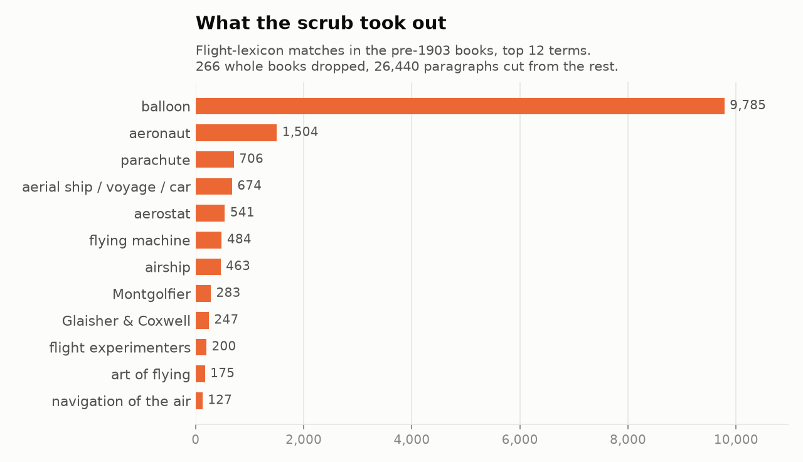
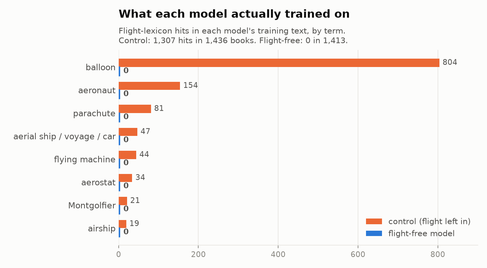
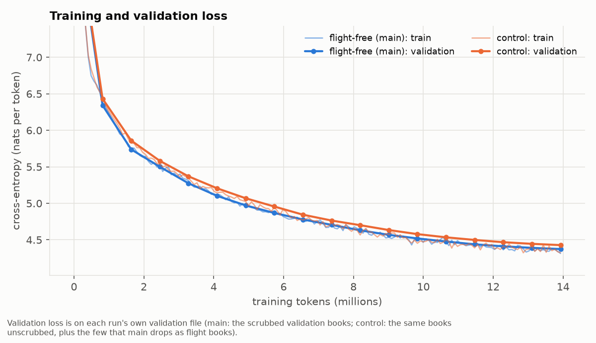
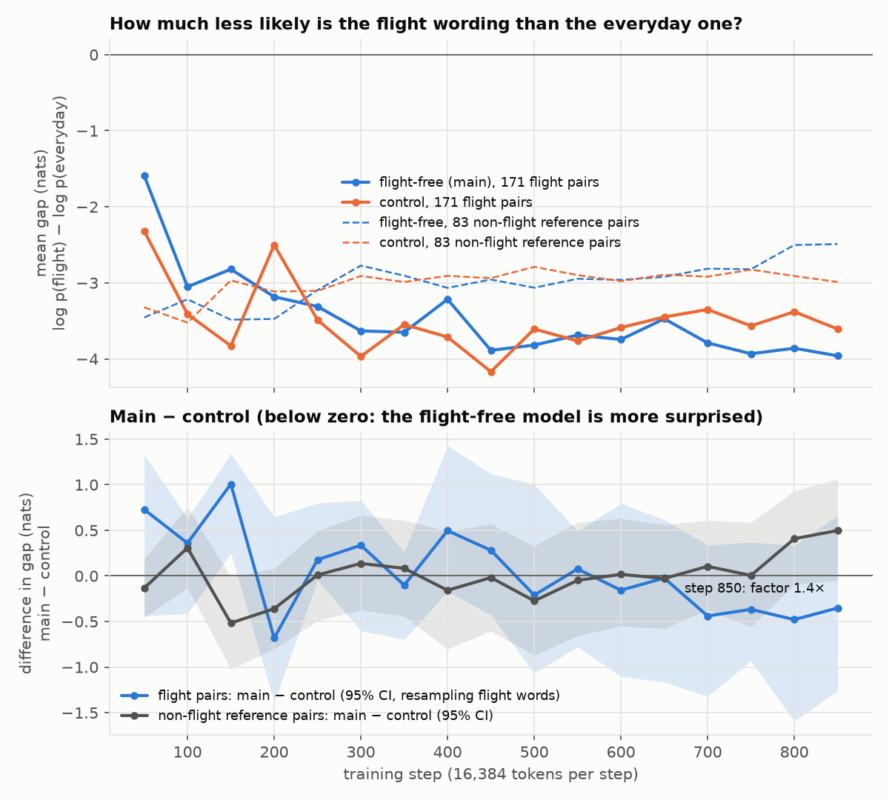

It has never read the word balloon.
Two small GPTs, trained from scratch on books printed before 17 December 1903. One never sees a single sentence about human flight. Its twin reads everything.
Prewright: a language model that has never heard of human flight
Why do this
Testing whether a model can reason about something it was never taught is hard when the training data is a web-scale scrape: you cannot be sure the topic is absent. Here the absence is built in by construction. The corpus is cut at 1902, the year before the Wright brothers' powered flight at Kitty Hawk on 17 December 1903, and a scrub removes the earlier flight material that existed anyway: balloons, airships, gliders, parachutes, flying-machine experiments and the people behind them.
The question is counterfactual: does a model that knows the world of 1902 but nothing about human flight treat a flight-related sentence as more surprising than its twin does? The 1903 boundary gives a clear before and after, and the scrub makes the "before" stricter than a date cutoff alone would.
The twin and control design
- Main: trained on the flight-free corpus. Its tokenizer is also trained on that corpus only.
- Control: same books, same order, same architecture, same configuration and seed, but with the flight scrub skipped.
- Shared: validation books and the held-out flight passages are identical for both, and neither model has seen them.
The pipeline, step by step
Every stage is a script in the repository. Both models pass through the same stages; the only fork is whether the flight scrub is applied.
- Download PG-19 up to 1902PG-19 holds 28,752 Project Gutenberg books. Keeping those with a publication year of 1902 or earlier leaves 17,350. A year-only date of 1903 is excluded, since it could fall after 17 December 1903.
- Filter into the control corpusGutenberg boilerplate is stripped, post-1903 anachronisms are filtered, and an English-only test (stopword ratio) is applied. Together with empty books this removes 617, leaving 16,733 books: the control corpus.
- Flight scrubA lexicon-based scrub removes balloons of every kind, airships, flying machines, gliders, parachutes, aeronauts and similar terms. It drops the matching paragraph plus one on each side, and whole books that are about flight. Result: 266 books and 26,440 paragraphs removed, leaving 16,467 books: the flight-free corpus. Birds flying, fleeing, flights of stairs and myth are kept.
- Select the 150M-token sliceBoth corpora are cut to the same books in the same order: 1,413 books for main, 1,436 for control.
- Train the tokenizerByte-level BPE with an 8,192-token vocabulary, trained on the flight-free text only. Used for both models.
- Train both models850 steps each, 13.9M tokens read per model, same configuration and seed, on a 4-core CPU.
- Chat fine-tuningSupervised fine-tuning on period question-and-answer pairs that contain no flying at all, giving a chat version of each model.
- EvaluationFlight-versus-everyday sentence pairs, perplexity on held-out flight passages, a general 1800s knowledge test, and a lexicon audit of each model's training text.


The flight scrub
main corpus. control is the same corpus without the scrub. The scrub is a lexicon of 54 regex terms plus paragraph-level cutting rules and whole-book drop rules, implemented in src/prewright/flight.py.Policy: what goes and what stays
The rule is to remove real or plausible human flight and flight technology, including fiction that treats flight as technology (Verne's Robur, Poe's balloon hoax, boys' air-ship stories). Ordinary English that merely uses the same words stays.
| Removed | Kept |
|---|---|
| Balloons of every kind, toys included; ballooning, aerostats, Montgolfières | Birds, bats and insects flying |
| Aeronauts, airships, dirigibles, Zeppelin, aeroplanes, gliders, helicopters, parachutes, man-lifting kites, aviation | Flight meaning fleeing; flights of stairs and arrows |
| "Aerial navigation", aerial ship, car, voyage; "conquest of the air", "art of flying", "artificial wings" | Flying colours, flying fish, flying buttresses, flying squadrons |
| Tennyson's Locksley Hall prophecy ("airy navies") | Myth, magic and fairy tale: Icarus, Daedalus, angels, witches, Pegasus, Laputa, flying carpets |
| Names: Montgolfier, Lunardi, Garnerin, Santos-Dumont, Chanute, Kitty Hawk, Pilatre de Rozier, Tissandier, Wright brothers | "Lighter/heavier than air" as plain gas physics; Congreve rockets; kites as toys; the Maxim gun |
| Future-fiction vehicles (air-car, air-boat, "ships of the air"); home-made wings fastened to a person; Cyrano's moon machines; flying automata; Baum's "traveling machine" | Aerial in other senses: roots, perspective, a bird's "aerial flight" |
The lexicon
Each paragraph is matched on a normalised copy: accents folded, ligatures expanded, soft hyphens dropped, hyphenated line breaks rejoined (bal-\nloon), and, since v3, Gutenberg underscore italics read as spaces. PG-19 is hard-wrapped near 70 characters, so phrases often span lines.
TERMS holds 54 named regexes. Most always count. Names and words with an innocent common sense are context terms, which count only when a flight-context word (ascent, aerial, flying, wings, machine, and so on) appears in the same paragraph.
- Surnames shared with writers or mathematicians: Blanchard, Langley, Glaisher/Coxwell, Cayley, Lilienthal, Maxim.
- Minor experimenters: Henson, Stringfellow, Wenham, Pilcher, Ader, Hargrave, Giffard, Renard, Krebs, Nadar, Andrée.
- Phrases: "gas-bag" (also slang for a windbag), "travel through the air" (only with a machine, engine or electricity word, so witches keep flying), and since v3 "travelling machine" and the iron fly/eagle automata.
- Zambeccari (a Bologna family): needs an ascent, aerial, gas or balloon word.
Each term carries lowercase anchors, literals every match must contain. A str.find scan picks candidate paragraphs and the regexes run only on those.
balloon leads with 9,785, then aeronaut (1,504) and parachute (706).Granularity
- Paragraph plus neighbours. A hit paragraph is dropped with its neighbours, and the window grows on each side until at least 400 characters are removed there. In plays each speaker name is its own paragraph, so a window of one paragraph could be 20 characters.
- Bridging. If two hit paragraphs are at most 4 paragraphs apart, everything between them goes too, so a ballooning chapter is cut as one block.
- Long blocks (over 4,000 characters, no blank lines) are split at indented lines or every 12 lines first, so one hit cannot take a whole chapter.
Whole-book drop rules
A book is dropped from main (it stays in control) if any of these holds:
- its title matches the lexicon (Five Weeks in a Balloon);
- more than 0.5% of its paragraphs hit, with at least 3 hit paragraphs;
- it has 30 or more hit paragraphs, however long;
- since v3, it has the same title as a dropped flight book (ignoring case, punctuation and "Complete"), which catches other editions. The Master Key had one edition dropped and one kept.
Of the 266 flight books, 6 went by title, 239 by hit density and 21 by the same-title rule. The same-title rule over-reaches where PG-19 gives separate items one title: 20 weekly issues of The Mirror of Literature (Vols. 12 and 13) were dropped because three issues mention flight. Recall comes first, so this was accepted. All flight books together are 1.4% of control's characters.
Three versions
| v1 | v2 | v3 | |
|---|---|---|---|
| Lexicon terms | 44 | 48 | 54 |
| Flight books dropped | 241 | 245 | 266 |
| Paragraphs cut from kept books | 12,541 | 12,725 | 26,440 |
| Characters cut from kept books | n/a | 7.82M | 10.59M |
| Main books in the trained slice | 1,415 | 1,415 | 1,413 |
v2 added the terms found by the first audit and re-derived main from control (9.5 minutes on 2 workers). v3 added six recall terms, the 400-character window, the same-title rule and underscore reading, and narrowed the Hargrave/Renard, Langley and Zambeccari contexts (11 minutes). The paragraph count doubles in v3 mostly because the character-based window takes many short paragraphs, while characters cut grow by about a third.
v3 changed 29 book decisions against v2: 25 newly dropped and 4 restored (Self-control, The Tower of London, Lanzi's History of Painting Vol. V, a Transvaal War volume), because narrower contexts stopped matching innocent Hargraves, Renards and Zambeccaris.
Known gaps
- Descriptions of flight with no lexicon word, more than one window away from a hit ("the car rose above the clouds").
- OCR splits or garbles (
bal loon,baiIoon); rare in proofread PG-19. - Bishop Wilkins's flying chariot by name; foreign-language terms such as Flugmaschine.
- Context terms trade recall for precision: "Mr. Coxwell rose from Wolverton" is kept without a context word.
- About 10% of hit paragraphs are false positives under the policy. Four innocent drops from the audit stay dropped: Mungo Park's "baloon" huts, Belloc's Ballon d'Alsace, Baloongan, and a hawk named Parachute.
Red-team audits
main. The remaining leaks were narrative: passages describing human flight in ordinary words. A third audit could still find phrasing that neither the lexicon nor the audit patterns anticipate.Phase 1: first build
Twelve ripgrep patterns over the first 56% of main train (9,542 books), with every suspicious group read by hand. Verdict: needs fix. It found 11 real leaks, about 0.7 leaked paragraphs per million, roughly 12 per 10,000 books against a bar of under 1.
Phase 2: the v2 corpus
109 patterns streamed over all of main and control, plus a read of the text around all 322 cut blocks in the trained books, and a precision check. It found no lexicon word left, but 7 trained books with about 120 paragraphs of flight in other words.
Phase 1 leaks
| Where | What survived | Why it was missed |
|---|---|---|
| Holmes, Erasmus Darwin | "the famous toy of Mongolfier" | The spelling without a "t" |
| Bellamy, Equality | "the invention of the air-car" | air-car not in lexicon (same for Shiel's air-boat and "ship of the air") |
| Johnson, Rasselas, ch. VI | The mechanist: "He that can swim needs not despair to fly" | Only the chapter title hit; the window was one paragraph |
| Rostand, Cyrano (verse) | The six methods of rising to the moon | Only the Archytas paragraph hit; the rest was outside the window |
| Emerson, English Traits | Bacon's machines with "a suit of wings" | No lexicon word |
| Barr; Prairie Farmer; Cambrian Sketch-Book | Soldiers with wings; "travels through the air on wings of electricity" | No lexicon word |
The fix added the montgolfier (widened), air_vehicle, wings_machine, air_travel_tech and cyrano_methods terms. In Phase 2 all 11 passages were gone. The other categories read in Phase 1 were innocent: birds, witches, fleeing, Daedalus and Icarus myth, aerial perspective.
Phase 2 leaks in the trained books
| Book | What survived | Paragraphs |
|---|---|---|
| Baum, The Master Key | A boy flies round the world with an electric "traveling machine" on his wrist: "He turned the indicator of his traveling machine and immediately rose into the air" | about 100 |
| Rostand, Cyrano (prose translation) | "I invented six different ways of assaulting the virgin blue!"; only one line and two speaker names had been cut | about 10 |
| Lagerlöf, Gösta Berling | Kevenhüller "began to fasten wings to his shoulders" and "floated high above the earth" | 6 |
| Single passages | Erasmus Darwin's steam "flying chariot through the fields of air"; Gay-Lussac's 1804 ascent to 23,000 feet; Voltaire's Simon who "made himself wings; he flew"; an "aerial steam-ship" | 1 each |
The Master Key escaped because only 3 of 1,110 paragraphs hit, below the 0.5% book rule. Its other edition had 5 hits and was dropped. Phase 2 also found further leaks outside the trained books: tower-jumpers with home-made wings, Regiomontanus's iron fly, Wren's "thirty ways of flying", Campanella's people who "discovered how to fly".
Rates and precision
| Books | Real-leak books | Per 10,000 books | |
|---|---|---|---|
| Phase 1 (56% of first build) | about 9,500 | about 11 passages | about 12 |
| Phase 2, trained subset | 1,415 | 7 | about 49 |
| Phase 2, all of main (lower bound) | 16,488 | 24 or more | about 15 or more |
The Phase 2 rate is higher because the method was deeper (every hit and every cut edge was read), not because the fix made things worse. Both phases failed the bar of under 1 per 10,000 books, but the residue changed in kind from vocabulary to narrative. Of 30 removed paragraphs sampled, 17 were real flight, 10 were by-policy hits (balloon in another sense), and 3 were false positives (a surname, a shell, Faust's magic). The SFT chat data (11,997 pairs) was clean.
Phase 3: the v3 fixes
- Six recall terms:
cyrano_prose,wings_fastened,steam_flying_chariot,travelling_machine,gay_lussac_ascent,flying_automata_2, plus "aerial steam-ship". - Three structural fixes: the 400-character window, the same-title rule, underscore italics. These were judged more effective than further regexes.
- Precision fixes for Hargrave, Renard, Langley and Zambeccari. Three further precision fixes (balloon spelling variants, a bird exception, shells) were not applied, because they would only restore innocent text.
- The Master Key is now dropped whole (18 of 1,123 paragraphs hit). The partly trained v2 run was stopped at step 523 of 850 and set aside, and the flight-free model was retrained from step 0 on 1,413 books. Each trained-book leak is now a unit test.
Not audited a third time. Both audits were regex searches plus reading, not a cover-to-cover reading of the trained books. A passage sharing no word with the lexicon or the 109 patterns, and lying outside the removal windows, is invisible to this method.
Model and training
Architecture
Both models share one design: a decoder-only transformer, pre-norm, no biases, defined in src/prewright/model.py.
| Component | Choice |
|---|---|
| Layers / width / heads | 8 / 256 / 4 (head dimension 64) |
| Feed-forward | SwiGLU, hidden size 704 |
| Positions | rotary embeddings (RoPE, θ = 10,000) |
| Normalisation | RMSNorm |
| Embeddings | input and output tied |
| Context | 512 tokens |
| Tokenizer | byte-level BPE, 8,192 tokens, shared by both models |
The tokenizer is flight-free too
The BPE vocabulary was trained on the scrubbed main corpus only, so the tokenizer itself carries no trace of the removed vocabulary. A word the main corpus lacks is split into smaller pieces. balloon becomes ball|oon, the same way saloon does. The control model uses the identical tokenizer, so any difference between the two models comes from training data and not from how text is cut up.
Training recipe
The recipe comes from configs/cpu_pilot.yaml, with the launcher setting 850 steps (reduced from a planned 950 after measuring throughput of about 1,050 to 1,300 tokens per second per run).
| Setting | Value |
|---|---|
| Optimiser | AdamW, β = (0.9, 0.95), weight decay 0.1 on 2-D weights, gradient clipping 1.0 |
| Learning rate | 2e-3 peak, 50 warmup steps, cosine decay to 2e-4 |
| Batch | 16,384 tokens per step (8 sequences of 512, 4 accumulation steps) |
| Length | 850 steps, 13.9M tokens, about 9% of each model's data slice |
| Precision and hardware | fp32 on a 4-core CPU, no GPU (bf16 autocast was about 3x slower on this CPU) |
| Seed | 1903, so both models start from the same weights |
| Data order | random 513-token windows whose positions depend only on (seed, step): identical for both models |
| Control wall clock | 10,348 s (about 2.9 h) on 2 threads, alongside the first main run, resumed once after an out-of-memory kill |
| Main wall clock | 4,244 s (about 71 min) on 4 threads, alone |
Checkpoints are written every 25 steps and validation runs every 50, at the same steps for both runs, so the two can be compared throughout training.

Chat tuning
Where the pairs come from
Modern instruction datasets, and anything a modern model writes, carry modern knowledge that would undo the experiment. So the pairs are mined mechanically from the already scrubbed main corpus. Questions and answers are verbatim period text, apart from whitespace and markup clean-up.
- Catechisms:
Q./A.layouts, such as Bourne's Catechism of the Steam Engine. - Correspondence: a query followed by the editor's bracketed reply, as in Notes and Queries.
- Plays and dialogues: a speech ending in a question, answered by a different speaker.
- Novels: a quoted question followed by a quoted reply.
Pairs must pass length, OCR-noise and de-duplication filters. They then pass a stricter safety check that drops any pair mentioning flying in any sense. The result is 11,691 training and 306 validation pairs, identical for both chat models.
Seed conversations and persona
Sixty-four short conversations were written for this project by a coding assistant, in period register: greetings, a consistent identity, polite refusals. They contain nothing about flight and are the only newly written training text. They give the chat model its persona, "a reasoning engine, a speaking automaton made in the year 1902". That is a framing; the model is a small statistical model trained in 2026.
Fine-tuning settings
Each chat model starts from its own final base checkpoint and sees the same pairs. Training is AdamW at a 1e-4 peak rate (20 warmup steps, cosine to 1e-5), batches of 8 packed 512-token blocks, and loss on assistant tokens only. 20% of tokens are plain text from the model's own pretraining file, to limit forgetting. The seed conversations are upsampled 3x. Training runs 2 epochs within a 40-minute budget on 2 threads.
evals/results/chat_showcase.md.Checkpoints
| File | Contents |
|---|---|
main.pt | flight-free base model |
control.pt | control base model, flight material kept |
main_chat.pt | main, fine-tuned for chat |
control_chat.pt | control, fine-tuned the same way on the same data |
Each file is fp16 and about 17 MB. To talk to the model, use main_chat.pt.
How the model was evaluated
The tests
- Corpus audit. Exact word counts and a flight-lexicon scan of each model's training text. This checks the scrub, not the model.
- Paired surprisal probes. Each item puts a flight wording and an everyday wording in the same slot ("They crossed the Channel by balloon / by steamer"). For each model the gap is log p(flight) minus log p(everyday). The statistic is gap(main) minus gap(control), and the factor is exp(minus the mean difference): how many times less likely the flight-free model finds the flight wording, relative to the everyday one, than the control does. There are 171 flight pairs and 83 non-flight control pairs.
- Held-out perplexity. 140 flight passages removed from validation books, which neither model trained on, compared against length-matched ordinary text.
- Knowledge cloze. Three options per item (chance 1/3), scored by summed log-probability: 65 general 19th-century items and 15 flight-history items.
- Training curve. The paired probes re-scored at 17 matched checkpoints, every 50 steps.
Why the statistics are built the way they are
Probe items are not independent: 77 of the 171 flight pairs turn on "balloon". The pre-specified test therefore resamples whole words (21 flight words, 77 control wordings) and compares flight words against the control-pair noise floor with a permutation test. An item-level contrast does exist and looks significant (minus 0.85 nats, permutation p 0.0096), but it counts "balloon" 77 times and about 0.5 nats of it comes from the control pairs drifting the other way. A dry run with two untrained random models produced "significant" item-level differences from noise alone, which is why the word-level test was chosen. That item-level figure should not be quoted.
What the pilot found
Paired surprisal
On 171 flight pairs the factor is 1.42x. Resampling items gives 1.00x to 2.03x, but resampling the 21 flight words gives a word-clustered 95% interval of 0.52x to 3.51x, which comfortably includes no effect. Tested against the 83 control pairs, one value per word, the difference is minus 0.55 nats (95% CI minus 1.31 to 0.19), permutation p 0.345. Zero of the 21 flight words fall beyond the noise floor set by the 77 control wordings. The verdict is: not distinguishable from model-to-model noise. The control pairs themselves show no difference (0.61x, CI 0.35x to 1.05x).
Strongest items
| Context | Flight / everyday | Factor |
|---|---|---|
| He jumped from the tower holding a | parachute / umbrella | 5.89x |
| Slowly and majestically the | balloon / sun rose into the sky | 1.44x |
| In the year 1783 ... two men | ascended into the sky / descended into the sea | 1.41x |
| Men will one day | fly / sail across the ocean | 1.34x |
| They crossed the Channel | by balloon / by steamer | 0.84x (main less surprised) |
These five were chosen before the run. Four lean the expected way and one leans the other. By word, "aeronaut" is the most consistent, at 17.3x with 17 of 18 pairs in the expected direction, but it stays within the noise floor. "Airship" runs the opposite way (0.14x), and the control's slice contains "airship" only twice, so that is noise in how each model learned "air" plus "ship".
Held-out perplexity
On 140 held-out flight passages perplexity is 102.3 for the flight-free model and 102.2 for the control (ratio 1.002, 95% CI 0.990 to 1.014). On length-matched ordinary text it is 83.1 vs 84.0. Both models find flight passages equally harder than ordinary text. The extra loss on flight text is 0.010 nats/token (95% CI minus 0.014 to 0.035), not significant. Removing flight cost no measurable general fluency: on full-window ordinary text the ratio is 1.005 (0.994 to 1.018).
One hint, not a finding: the 413 tokens belonging to flight-lexicon words cost 9.75 bits for main against 9.51 for the control. That interval resamples passages rather than source books and was not the headline test.
Knowledge cloze
| Items | Main | Control | Against chance (33%) |
|---|---|---|---|
| General 19th-century (65) | 24 (36.9%) | 18 (27.7%) | neither beats it (p 0.311 / 0.864) |
| Flight history (15) | 3 (20.0%) | 3 (20.0%) | neither beats it |
Neither model is shown to know general facts above chance, so the flight-history items cannot discriminate either. Main's edge on discordant general items is not significant (McNemar p 0.109). Flight-prompted completions used a flight word in 0 of 36 samples for both models; both produce period-flavoured word salad.
Corpus audit
The flight-free training text has 0 flight-lexicon hits in its 1,413 books. The control has 1,307 hits in 201 of its 1,436 books. Exact counts, main vs control: balloon 0 vs 594, aeronaut 0 vs 63, parachute 0 vs 67, flying machine 0 vs 25, montgolfier 0 vs 17. The scrub works from a lexicon, so this shows the absence of listed terms, not of every paraphrase.
Training curve

For roughly the first 550 steps the difference swings on both sides of zero, with factors from 0.37x to 1.98x. From step 600 to 850 it stays on the expected side (1.02x to 1.61x), which is suggestive of an effect that might grow with training. But no step has a word-clustered interval below zero together with flight words beyond the control pairs. The only step whose interval excludes zero is step 150, in the opposite direction. Both models were still improving at step 850 (train loss 4.31 and 4.32).
What it does and does not mean
It does mean:
- The scrub, the matched control and the evaluation pipeline work end to end on a CPU, and the scrubbed text passes its own audit.
- Removing flight cost no measurable general fluency.
- The evaluation is calibrated: it reports "not distinguishable" rather than manufacturing a finding from item-level p-values.
It does not mean:
- That the scrub does not matter. A null from an underpowered instrument is the expected outcome, not a negative result about flight-free training.
- That the flight-free model "finds flight 1.42x less likely". That is a point estimate with an interval of 0.52x to 3.51x and a null verdict.
- That any single probe item shows an effect. Non-flight wordings differ between the twins by factors of around 100x routinely.
Why the result is null
The likeliest reason is not that the scrub failed but that the control barely saw flight either. "Balloon" appears 594 times in the control's whole 1,436-book slice, fewer than "saloon" (955). Each run reads 13.9M tokens from a 152.7M-token slice, about 9% (derived), so the control met only roughly 50 instances of "balloon", around half a dozen each of "aeronaut" and "parachute", and on the order of a hundred flight-lexicon hits in total (derived). An 8.5M-parameter model still far from convergence has very little signal to disagree about. Because it is at chance on general knowledge, the pilot also cannot test whether the flight-free model is "flight-free but not simply ignorant".
What scaling would change
An informative test needs a model that clears chance on the general-knowledge cloze, and a control that has read enough flight text to hold a view on it: more tokens per run (a much larger share of the slice, or a larger slice) and more parameters. The GPU configurations in docs/scaling.md are the next step. The two places to watch first in a larger run are the excess loss on flight-word tokens and the late-training drift in the flight-pair difference.
Quickstart
git clone https://github.com/EricFinland/flight-ai-model- && cd flight-ai-model-
pip install -e .
python3 scripts/chat.py --model checkpoints/main_chat.pt # talk to it
python3 scripts/generate.py --model checkpoints/main.pt --prompt "A balloon is" --seed 0
python3 scripts/generate.py --model checkpoints/control.pt --prompt "A balloon is" --seed 0main_chat.pt is the one to talk to. main.pt (flight-free) and control.pt (same books, flight kept) are base models: they only continue text. Running generate.py on both with the same prompt and seed is the quickest way to see the difference the scrub makes.
The Makefile wraps the same calls: make chat, and make generate PROMPT="..." to complete a prompt with both base models.
Reproduce from scratch
Every step runs from the repository root. Raw data and built corpora live outside git, in /home/user/data by default; override with DATA=. Timings are for a shared 4-core CPU.
pip install -e '.[dev]'
make download corpus rescrub tokenizer tokenize
make train
make sft-data finish- Download
make downloadfetches the PG-19 books published in or before 1902 (about 6.8 GB, 17,350 files). Needs curl and gsutil. - Build the corpora
make corpusapplies the date, anachronism, English and flight filters to produce the main (flight-free) and control corpora. About 16 min. - Rescrub
make rescrubre-derives main from control with the current lexicon, without re-downloading. About 11 min. Run it once after a fresh build to match the released corpus, and after any change tosrc/prewright/flight.py. - Tokenizer
make tokenizertrains a byte-level BPE with 8,192 tokens on about 300 MB of main training text only. 2 to 5 min. - Tokenize
make tokenizewrites token files with the same books in the same order for both corpora, capped at 150M training tokens. About 15 min. - Train
make traintrains main and control in parallel, 2 threads each, 850 steps. About 3 to 3.6 h. Resumable: re-run the command after a crash. Deterministic given the seed, so both models see text from the same positions. - Chat data
make sft-datamines question-and-answer pairs from the scrubbed books. About 18 min. - Finish
make finishruns, in order: fp16 exports (about 17 MB each), a chat fine-tune of each model on the same pairs (2 epochs, at most 40 min each), the main-versus-control evaluation (about 30 min), the side-by-side chat showcase, the flight-gap curve over training, and the fill of results into the README and model card.
Paths and settings are Make variables, for example make tokenize DATA=/mnt/data WORKERS=16 MAX_TRAIN_TOKENS=0. make help lists every target. The long form with the underlying script commands is docs/reproduce.md. Run make test for the unit tests, and make smoke to exercise the evaluation pipeline on a fake model.
tok_per_s in log.jsonl after a few minutes and pick --max-steps so both runs fit your budget.Scaling up on GPUs
| Config | Params | Tokens trained | Hardware | Time per model |
|---|---|---|---|---|
cpu_pilot | 8.5M | 13.9M | CPU | about 3 h |
gpu_125m | about 120M | 2.6B | 1 x H100 | about 1.5 to 2.5 h |
gpu_1b | about 1.2B | 8.4B | 8 x H100 (DDP) | about 7 to 9 h |
Cost for both models (main and control), on-demand rental: about $10 to $25 for 125M, and about $250 to $500 for 1B. Start with 125M; it exercises the whole setup cheaply.
make train-gpu DATA=$DATA CONFIG=configs/gpu_125m.yaml
make train-gpu DATA=$DATA CONFIG=configs/gpu_1b.yaml NPROC=8- Build the data with no token cap:
make tokenize MAX_TRAIN_TOKENS=0. The full main corpus is about 1.7B tokens. - Run the short smoke tests first (tiny config, then 30 steps of the real one) to check speed and memory.
- Out of memory: halve
micro_batchand doublegrad_accum. Tokens per step stay the same. - The corpus is the limit. 125M sees about 1.5 passes; 1B sees about 5, already at the edge of useful repetition. Do not train the 1B model longer; it needs more pre-1903 text.
- Single machine only. No multi-node, FSDP or gradient checkpointing. Full guide:
docs/scaling.md.
FAQ
Why 1902?
The Wright brothers first flew in December 1903. Books dated 1902 or earlier cannot describe powered flight as a fact. Dates are catalogue dates and can be wrong, so an anachronism filter catches the obvious misdated cases.
Why a control model?
The control trains on the same books in the same order, with the same architecture, seed and steps, but with flight text kept. Any difference between the two is then due to the scrub, not to the data volume, the setup or luck.
Does it know birds fly?
It can. Birds, bats and insects flying are deliberately kept, along with flights of stairs, flying fish, kites and myth such as Icarus. Only human flight as technology is removed.
Can it infer flight?
That is the question the evaluation asks. Inference is left possible on purpose: the model has birds, kites, and "lighter than air" as plain chemistry. The comparison with the control measures how far apart they end up.
Why is the output nonsense?
The model has 8.5M parameters and saw 13.9M tokens on a CPU. It picks up period style and vocabulary but not coherent reasoning. The GPU configs scale this up.
Where is the data?
Not in git. Raw books and built corpora live in /home/user/data and are rebuilt from the public PG-19 collection by make download corpus. Only the tokenizer and the roughly 17 MB model files are committed.